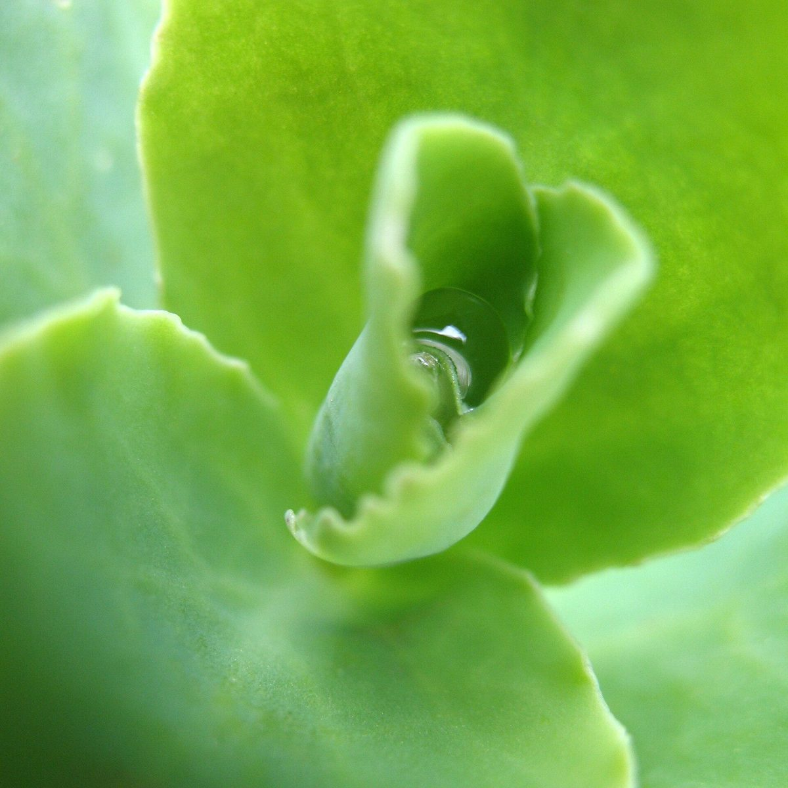
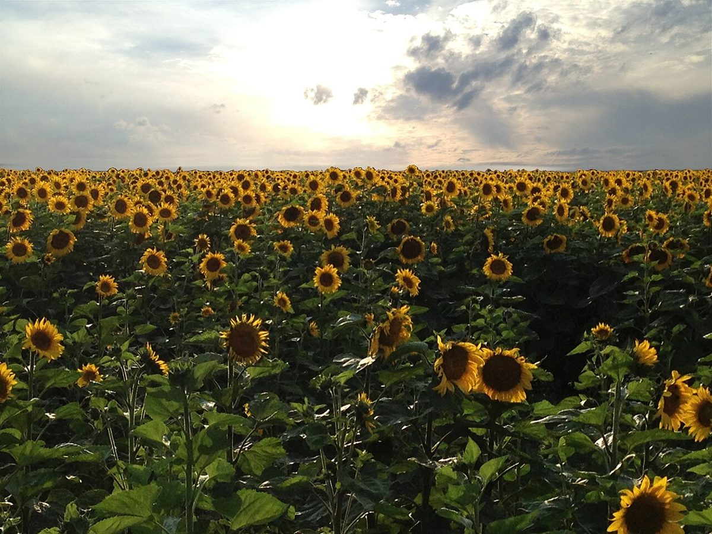
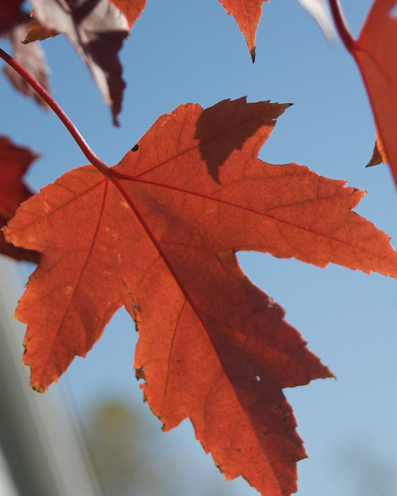
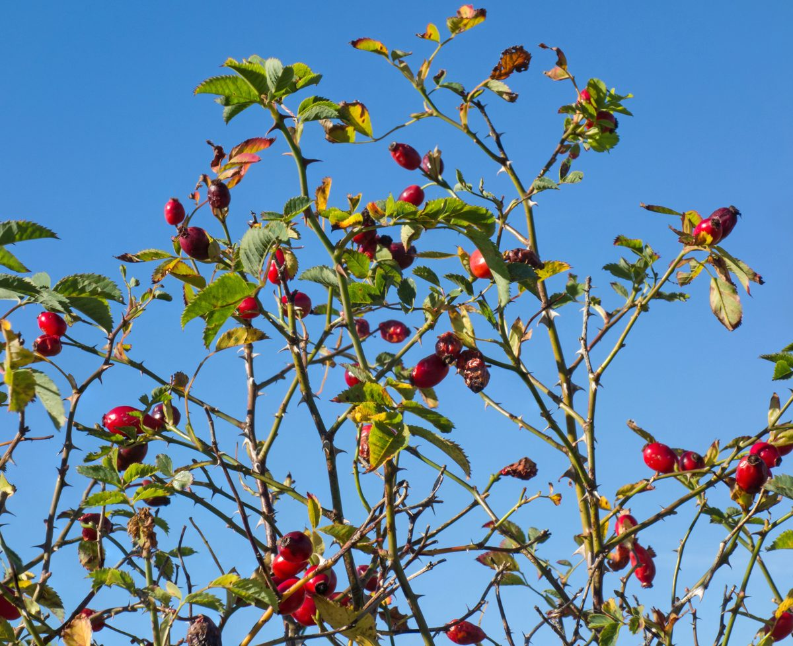
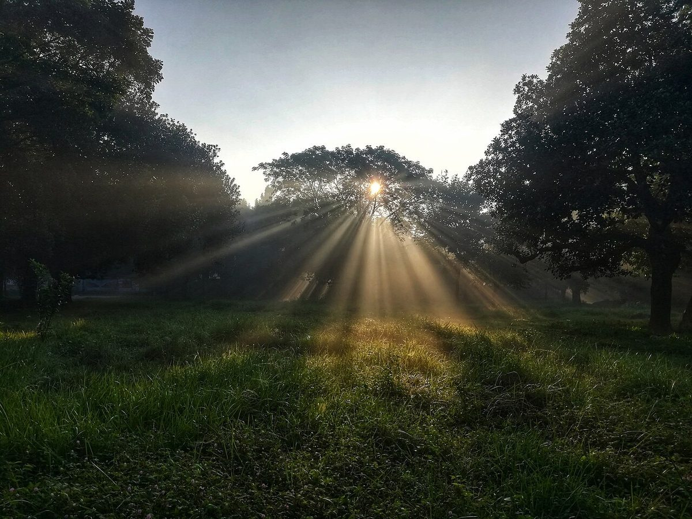

制作側の連想
四季の名前から、四段の引き出しへ
店名の由来は分かりません。制作側は「FOUR SEASONS」と「SiKi」という響きから四つの季節を連想し、衣替えのときに季節ごとの品を入れ替える、四段の引き出しを思い浮かべました。そこでこのサイトは、春・夏・秋・冬の順に引き出しを開けていく作りにしています。お店の理念や由来とは無関係の、制作側の連想です。
四段の引き出し(イメージ)
ひとつずつ、開けてみる。
引き出しの題をクリックすると開け閉めできます。写真は由布市のものではなく、国外・撮影地不明のフリー素材です。お店の風景や商品ではありません。
春SPRING一段め
春の段には、赤いチューリップ畑と、若葉にたまった水のしずくをしまってみました(どちらもイメージの写真です)。


夏SUMMER二段め
夏の段は、ひまわりと海。日ざしの強い季節の取り合わせを、制作側が想像で並べたものです。



秋AUTUMN三段め
秋の段には、赤く色づいた葉と、赤い実をつけた枝。引き出しの中身は、季節ごとに入れ替わるものと想像しています。


冬WINTER四段め
冬の段は、霜をまとった葉と枝、それから朝の光。いちばん下の段で、一年がひと巡りします。



ご案内
お店のこと(確認できたものだけ)
| 所在地 | 〒879-5518 大分県由布市挾間町北方103-5 |
|---|---|
| 電話 | 097-585-5677 |
| 営業時間 | 準備中 |
| 定休日 | 準備中 |
| ご予約 | 準備中 |
| 駐車場 | 準備中 |
| SNS | Instagram @cafe.siki |